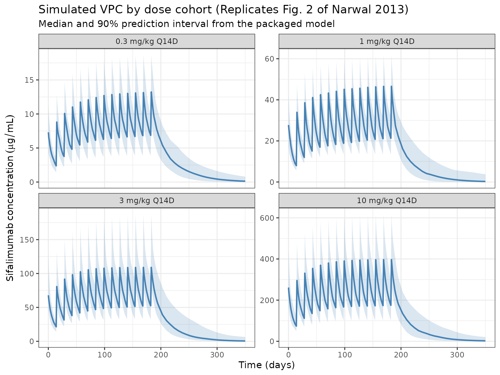

Narwal_2013_sifalimumab
Source:vignettes/articles/Narwal_2013_sifalimumab.Rmd
Narwal_2013_sifalimumab.RmdModel and source
- Citation: Narwal R, Roskos LK, Robbie GJ. Population pharmacokinetics of sifalimumab, an investigational anti-interferon-alpha monoclonal antibody, in systemic lupus erythematosus. Clin Pharmacokinet. 2013;52(11):1017-1027. doi:10.1007/s40262-013-0085-2
- Description: Two-compartment population PK model for sifalimumab (anti-IFN-alpha IgG1) in adult patients with systemic lupus erythematosus (Narwal 2013)
- Article: https://doi.org/10.1007/s40262-013-0085-2
- Article (open access): https://pmc.ncbi.nlm.nih.gov/articles/PMC3824374/
Sifalimumab is a fully human IgG1-kappa mAb that neutralises a majority of the subtypes of human interferon-alpha. Narwal 2013 developed the population PK model from the phase Ib MI-CP152 study (NCT00482989), a multicentre, randomised, placebo-controlled, dose-escalation trial in which 121 SLE patients received escalating IV doses of 0.3, 1, 3, or 10 mg/kg every 14 days for up to 14 doses. The final model is the single structural model of record in the paper — the authors describe a base model and one final model with covariates; no alternative candidate models are presented.
The structural model is a two-compartment linear model with first-order elimination (NONMEM ADVAN3 / TRANS4; Narwal 2013 Section 2.3). A target-mediated elimination component was not necessary because the soluble target (IFN-alpha) is in stoichiometric excess only at sub-therapeutic concentrations.
Population
The final-model population was 120 SLE patients from the MI-CP152 phase Ib study (Narwal 2013 Table 1 / Section 3.1):
- Treatment cohorts: 26 at 0.3 mg/kg, 25 at 1 mg/kg, 27 at 3 mg/kg, 42 at 10 mg/kg.
- Sex: 114 female (95%), 6 male.
- Region: 85 from North America (71%), 35 from South America (29%).
- Baseline body weight: 43.1-120 kg (median 73, mean 76 +/- 19).
- Age: 18-71 years (median 43, mean 42 +/- 11).
- Baseline SLEDAI score: 2-34 (median 10).
- Baseline 21-gene IFN signature (BGENE21): 0.63-87 (median 33).
- One 10 mg/kg subject was excluded from the analysis due to very low observed serum concentrations.
A total of 2,370 serum concentrations were available (mean ~20 samples per subject over up to 1 year). The lower limit of quantitation was 1.25 ug/mL (Narwal 2013 Section 2.2).
The same metadata is available programmatically via
readModelDb("Narwal_2013_sifalimumab")$population.
Source trace
The per-parameter origin is recorded as an in-file comment next to
each ini() entry in
inst/modeldb/specificDrugs/Narwal_2013_sifalimumab.R. The
table below collects them in one place for review.
| Parameter (model name) | Value | Source |
|---|---|---|
lcl (CL, L/day) |
log(0.176) | Table 2, theta1 = 0.176 L/day (reported as 176 mL/day) |
lvc (V1, L) |
log(2.90) | Table 2, theta2 = 2.90 L |
lvp (V2, L) |
log(2.12) | Table 2, theta3 = 2.12 L |
lq (Q, L/day) |
log(0.171) | Table 2, theta4 = 0.171 L/day |
e_wt_cl |
0.481 | Table 2, theta5 (Eq. 3) |
e_bgene21_cl |
0.0558 | Table 2, theta6 (Eq. 3) |
e_cohdose_cl |
0.0542 | Table 2, theta7 (Eq. 3) |
e_steroid_cl |
0.195 | Table 2, theta8 (Eq. 3) |
e_wt_v1 |
0.489 | Table 2, theta9 (Eq. 4) |
e_wt_v2 |
0.646 | Table 2, theta10 (Eq. 5) |
IIV block etalcl/etalvc/etalvp
|
lower-tri c(0.075478, 0.046354, 0.091758, 0, 0.021369, 0.289979) | Table 2 %CVs (28/31/58) and correlations (CL-V1 0.557, V1-V2 0.131) |
etalq |
0.408195 | Table 2, Q %CV = 71% |
propSd |
0.275 | Table 2, residual error CV 27.5% |
d/dt(central) + d/dt(peripheral1)
|
two-compartment IV | Section 2.3 (NONMEM ADVAN3 TRANS4) |
Narwal 2013 final-model equations (paper’s numbering):
The %CV-to-variance conversion uses and covariances use . The CL-V2 correlation is not reported in Table 2 and is therefore taken as zero in the 3x3 OMEGA block.
Virtual cohort
Original observed concentrations are not publicly available. The
simulations below use a virtual cohort whose body-weight distribution
approximates the MI-CP152 population (median 73 kg, range 43.1-120). All
subjects are assigned the median BGENE21 of 33, set to
STEROID = 0 (no baseline steroid use), and stratified into
the four dose cohorts that matched the phase Ib design.
set.seed(2013)
n_per_cohort <- 50
cohorts <- c(0.3, 1, 3, 10)
cohort <- tibble::tibble(
ID = seq_len(length(cohorts) * n_per_cohort),
COHDOSE = rep(cohorts, each = n_per_cohort),
WT = pmin(pmax(rlnorm(length(cohorts) * n_per_cohort,
meanlog = log(73), sdlog = 0.22),
43.1), 120),
BGENE21 = 33,
STEROID = 0
)A Q14D dosing schedule of 14 infusions (to match MI-CP152) is used. Concentration observations are dense in the first dose interval (every 2 hours) and daily thereafter to capture terminal decline through Day 350.
infusion_dur_d <- 45 / 60 / 24 # 45-minute infusion, in days
dose_times_d <- seq(0, by = 14, length.out = 14)
obs_times_d <- sort(unique(c(
seq(0, 1, by = 2/24),
seq(1, 14, by = 0.5),
seq(14, 196, by = 1),
seq(196, 350, by = 7)
)))
build_events <- function(pop) {
d_dose <- pop |>
dplyr::mutate(AMT = WT * COHDOSE) |>
tidyr::crossing(TIME = dose_times_d) |>
dplyr::mutate(EVID = 1, CMT = "central",
DUR = infusion_dur_d, DV = NA_real_)
d_obs <- pop |>
tidyr::crossing(TIME = obs_times_d) |>
dplyr::mutate(AMT = NA_real_, EVID = 0, CMT = "central",
DUR = NA_real_, DV = NA_real_)
dplyr::bind_rows(d_dose, d_obs) |>
dplyr::arrange(ID, TIME, dplyr::desc(EVID)) |>
as.data.frame()
}
events <- build_events(cohort)Simulation
mod <- readModelDb("Narwal_2013_sifalimumab")
sim <- rxode2::rxSolve(mod, events = events, returnType = "data.frame")
#> ℹ parameter labels from comments will be replaced by 'label()'
sim$treatment <- paste0(sim$COHDOSE, " mg/kg Q14D")For deterministic typical-value profiles (Narwal 2013 Fig. 2 median line), the random effects are zeroed out:
mod_typical <- rxode2::zeroRe(mod)
#> ℹ parameter labels from comments will be replaced by 'label()'
sim_typical <- rxode2::rxSolve(mod_typical, events = events,
returnType = "data.frame")
#> ℹ omega/sigma items treated as zero: 'etalvp', 'etalvc', 'etalcl', 'etalq'
#> Warning: multi-subject simulation without without 'omega'
sim_typical$treatment <- paste0(sim_typical$COHDOSE, " mg/kg Q14D")Replicate Figure 2 — VPC by dose cohort
Narwal 2013 Fig. 2 displays a visual predictive check of serum concentrations stratified by dose cohort (0.3, 1, 3, 10 mg/kg Q14D) with observed median and 5th/95th percentiles overlaid on simulated 90% prediction intervals. The chunk below reproduces the simulation side of the VPC.
sim_vpc <- sim |>
dplyr::filter(time > 0, !is.na(Cc)) |>
dplyr::group_by(treatment, time) |>
dplyr::summarise(
q05 = stats::quantile(Cc, 0.05, na.rm = TRUE),
q50 = stats::quantile(Cc, 0.50, na.rm = TRUE),
q95 = stats::quantile(Cc, 0.95, na.rm = TRUE),
.groups = "drop"
) |>
dplyr::mutate(treatment = factor(
treatment,
levels = c("0.3 mg/kg Q14D", "1 mg/kg Q14D",
"3 mg/kg Q14D", "10 mg/kg Q14D")
))
ggplot(sim_vpc, aes(time, q50)) +
geom_ribbon(aes(ymin = q05, ymax = q95), alpha = 0.2, fill = "steelblue") +
geom_line(colour = "steelblue", linewidth = 0.8) +
facet_wrap(~ treatment, scales = "free_y") +
labs(
x = "Time (days)",
y = expression(Sifalimumab~concentration~(mu*g/mL)),
title = "Simulated VPC by dose cohort (Replicates Fig. 2 of Narwal 2013)",
subtitle = "Median and 90% prediction interval from the packaged model"
) +
theme_bw()
Replicate Table 3 — steady-state exposure for fixed monthly dosing
Narwal 2013 Table 3 reports predicted median steady-state pharmacokinetic parameters following fixed monthly IV dosing of 200, 600, or 1,200 mg with a loading dose at Day 14:
| Dose | Cmax_ss (ug/mL) | Ctrough_ss (ug/mL) | AUC_ss (ug*day/mL) |
|---|---|---|---|
| 200 mg | 89 | 18 | 1,110 |
| 600 mg | 268 | 53 | 3,329 |
| 1,200 mg | 536 | 106 | 6,659 |
The simulation below reproduces this calculation with a typical 75 kg
subject (zeroRe) and monthly dosing (every 28 days) with an
additional loading dose on Day 14, sampled densely within the last
dosing interval.
# Doses: Day 0, loading dose at Day 14, then monthly (every 28 days).
# Simulate through Day 406 so the interval between the last two monthly
# doses (378 -> 406) is an accumulation-stabilized steady-state window.
monthly_dose_times <- c(0, 14, seq(42, 406, by = 28))
obs_ss_times <- sort(unique(c(
monthly_dose_times,
seq(378, 406, by = 0.25) # dense grid across the final interval
)))
ss_start <- 378
ss_end <- 406
build_ss_events <- function(dose_mg) {
d_dose <- data.frame(
ID = 1L, TIME = monthly_dose_times, AMT = dose_mg, EVID = 1,
DUR = infusion_dur_d, CMT = "central", DV = NA_real_
)
d_obs <- data.frame(
ID = 1L, TIME = obs_ss_times, AMT = NA_real_, EVID = 0,
DUR = NA_real_, CMT = "central", DV = NA_real_
)
rbind(d_dose, d_obs) |>
dplyr::arrange(ID, TIME, dplyr::desc(EVID))
}
ss_dose_mg <- c(200, 600, 1200)
mod_ref <- rxode2::zeroRe(mod)
#> ℹ parameter labels from comments will be replaced by 'label()'
ss_results <- lapply(ss_dose_mg, function(d) {
ev <- build_ss_events(d)
ev$WT <- 75
ev$BGENE21 <- 33
ev$COHDOSE <- d / 75 # per-subject cohort dose in mg/kg (reference subject)
ev$STEROID <- 0
sim_ss <- rxode2::rxSolve(mod_ref, events = ev, returnType = "data.frame")
last <- sim_ss |>
dplyr::filter(time >= ss_start, time <= ss_end)
tibble::tibble(
regimen = paste(d, "mg monthly"),
Cmax_ss = max(last$Cc, na.rm = TRUE),
Ctrough_ss = last$Cc[which.max(last$time)], # last observation pre-next dose
AUC_ss = PKNCA::pk.calc.auc(conc = last$Cc,
time = last$time,
interval = c(ss_start, ss_end),
method = "linear")
)
}) |> dplyr::bind_rows()
#> ℹ omega/sigma items treated as zero: 'etalvp', 'etalvc', 'etalcl', 'etalq'
#> ℹ omega/sigma items treated as zero: 'etalvp', 'etalvc', 'etalcl', 'etalq'
#> ℹ omega/sigma items treated as zero: 'etalvp', 'etalvc', 'etalcl', 'etalq'
published <- tibble::tibble(
regimen = paste(ss_dose_mg, "mg monthly"),
Cmax_pub = c(89, 268, 536),
Ctrough_pub = c(18, 53, 106),
AUC_pub = c(1110, 3329, 6659)
)
comparison <- published |>
dplyr::left_join(ss_results, by = "regimen") |>
dplyr::mutate(
Cmax_pct_diff = round(100 * (Cmax_ss - Cmax_pub) / Cmax_pub, 1),
Ctrough_pct_diff = round(100 * (Ctrough_ss - Ctrough_pub) / Ctrough_pub, 1),
AUC_pct_diff = round(100 * (AUC_ss - AUC_pub) / AUC_pub, 1)
)
knitr::kable(comparison,
caption = "Simulated vs published steady-state parameters (Narwal 2013 Table 3). Percent differences within ~20% are consistent with the typical-value fit.",
digits = c(0, 0, 0, 0, 1, 1, 1, 1, 1, 1))| regimen | Cmax_pub | Ctrough_pub | AUC_pub | Cmax_ss | Ctrough_ss | AUC_ss | Cmax_pct_diff | Ctrough_pct_diff | AUC_pct_diff |
|---|---|---|---|---|---|---|---|---|---|
| 200 mg monthly | 89 | 18 | 1110 | 86.0 | 19.1 | 1068.2 | -3.4 | 6.2 | -3.8 |
| 600 mg monthly | 268 | 53 | 3329 | 252.2 | 51.8 | 3018.0 | -5.9 | -2.2 | -9.3 |
| 1200 mg monthly | 536 | 106 | 6659 | 497.7 | 97.1 | 5811.7 | -7.1 | -8.4 | -12.7 |
PKNCA validation — single-dose NCA across the 4 cohorts
Single-dose NCA parameters (Cmax, Tmax, AUC over 14 days, half-life) across the 4 dose cohorts. The paper does not publish per-cohort NCA values, so this block serves primarily as a sanity check that the simulated profiles reproduce dose-proportional exposure with the expected mAb-like half-life (~2-4 weeks) on log-linear terminal decline.
first_interval_end <- 14
sim_nca <- sim |>
dplyr::filter(!is.na(Cc),
time >= 0,
time <= first_interval_end) |>
dplyr::select(id, treatment, time, Cc)
dose_df <- events |>
dplyr::filter(EVID == 1, TIME == 0) |>
dplyr::select(id = ID, time = TIME, amt = AMT) |>
dplyr::left_join(
cohort |>
dplyr::transmute(
id = ID,
treatment = paste0(COHDOSE, " mg/kg Q14D")
),
by = "id"
)
conc_obj <- PKNCA::PKNCAconc(sim_nca, Cc ~ time | treatment + id)
dose_obj <- PKNCA::PKNCAdose(dose_df, amt ~ time | treatment + id)
intervals <- data.frame(
start = 0,
end = first_interval_end,
cmax = TRUE,
tmax = TRUE,
auclast = TRUE,
half.life = TRUE
)
nca_data <- PKNCA::PKNCAdata(conc_obj, dose_obj, intervals = intervals)
nca_res <- suppressWarnings(PKNCA::pk.nca(nca_data))
#> ■■■■■■■■■■■■■■■■■ 52% | ETA: 3s
knitr::kable(summary(nca_res),
caption = "Simulated single-dose NCA across the MI-CP152 cohorts (first 14 days).")| start | end | treatment | N | auclast | cmax | tmax | half.life |
|---|---|---|---|---|---|---|---|
| 0 | 14 | 0.3 mg/kg Q14D | 50 | 58.5 [28.6] | 7.81 [36.6] | 0.0833 [0.0833, 0.0833] | 12.9 [3.78] |
| 0 | 14 | 1 mg/kg Q14D | 50 | 178 [24.1] | 23.8 [31.8] | 0.0833 [0.0833, 0.0833] | 13.3 [4.03] |
| 0 | 14 | 10 mg/kg Q14D | 50 | 1880 [28.6] | 264 [31.2] | 0.0833 [0.0833, 0.0833] | 11.2 [3.60] |
| 0 | 14 | 3 mg/kg Q14D | 50 | 543 [35.3] | 74.5 [44.0] | 0.0833 [0.0833, 0.0833] | 12.9 [4.26] |
Assumptions and deviations
- Reference weight 75 kg. Narwal 2013 uses 75 kg as the reference body weight in Eqs. 3-5 (the population median was 73 kg; 75 kg was chosen as a round-number reference). The packaged model uses 75 kg directly.
-
CL-V2 correlation = 0. Narwal 2013 Table 2 reports
the CL-V1 (0.557) and V1-V2 (0.131) correlations but does not report a
CL-V2 correlation, indicating the NONMEM OMEGA block did not include
this off-diagonal element. The 3x3 IIV block in the packaged model
therefore uses
cov(CL, V2) = 0and is positive-definite. -
Dose as subject-level covariate
(
COHDOSE). The paper’s Eq. 3 treats dose (mg/kg) as a power-term covariate on CL. Because every MI-CP152 subject was randomised to a single dose cohort that was maintained across all 14 infusions, this is a subject-level rather than an event-level covariate. For theCOHDOSEcolumn in theeventsdata, use the cohort assignment (0.3, 1, 3, 10 mg/kg for the phase Ib design; dose/WT for phase IIb fixed-dose simulations). The paper’s Discussion (p. 1024) notes that the apparent dose effect may be a data artifact of the escalating design — single-dose data in MI-CP126 were linear across 0.3-30 mg/kg. -
STEROIDdefault. The phase IIb simulations in the paper set BSTEROID = 0 (no baseline steroid use) as the reference. The virtual cohort above does the same; setSTEROID = 1per subject to simulate the +19.5% CL effect for concomitant-steroid users. - Monthly dosing interval for Table 3. Narwal 2013 Table 3 is labelled “monthly” without a numeric dosing-interval definition. The replication above uses every 28 days with an additional loading dose at Day 14, which matches the description in Section 3.2.2 and the phase IIb study protocol NCT01283139.
-
Residual error magnitude. The model uses
propSd = 0.275directly (Table 2 reports the residual-error %CV as 27.5%). If the paper’s NONMEM control stream usedSIGMAon variance scale, the equivalent issigma = 0.27547^2 = 0.07588; this is numerically equivalent because nlmixr2’spropSdis a standard deviation. - BLQ handling. Simulated concentrations are continuous; the clinical assay’s LOQ of 1.25 ug/mL is not imposed.
- No inter-occasion variability (IOV). Narwal 2013 did not report IOV on any PK parameter.